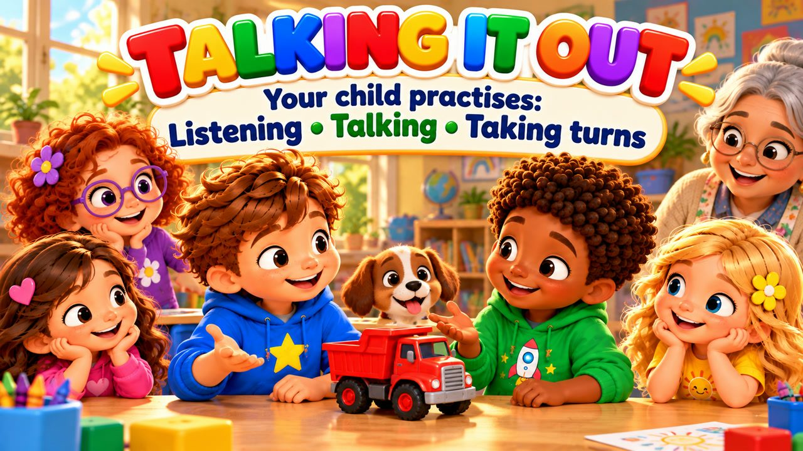
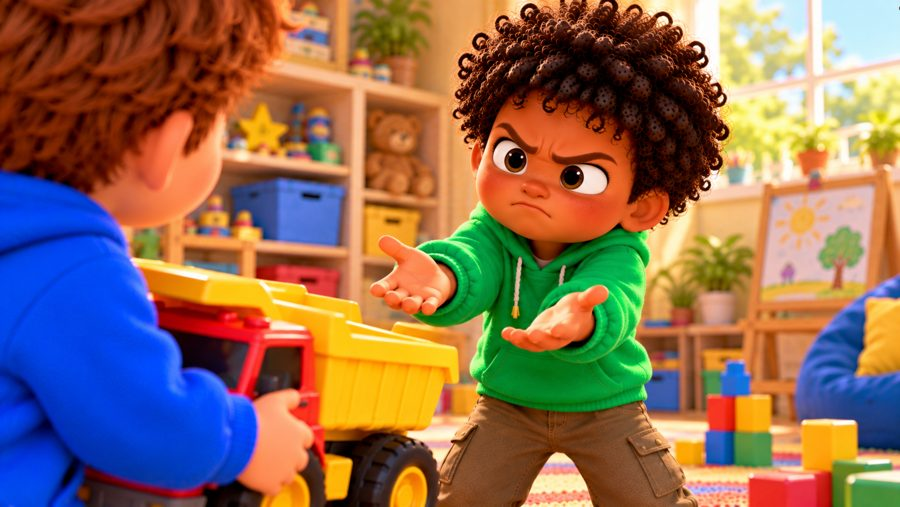
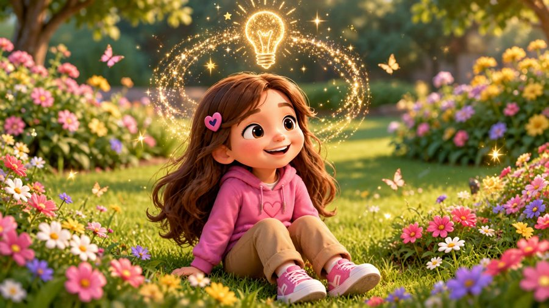
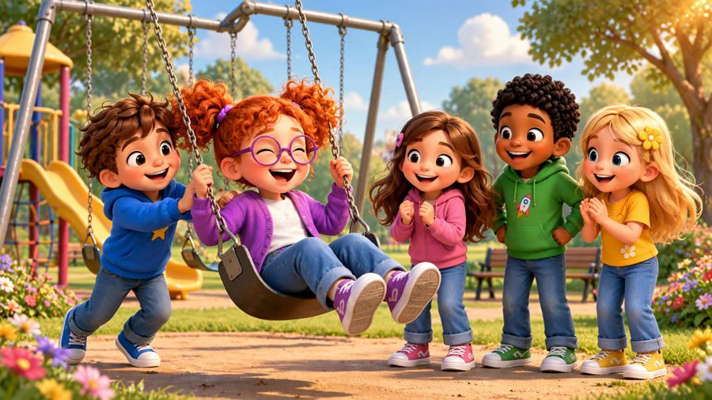

Let's Talk It Out
A song about solving disagreements! 💬 Sing along with Max, Mia, Jay, Lily, Rosie and Buddy the puppy as they learn to STOP, LISTEN and TALK it out — and find a plan that works for everyone.
"Let's Talk It Out!" is a sing-along song for kids about conflict resolution. Max and Jay both want the same red truck, and Rosie and Lily want to play different games — instead of grabbing or shouting, they say what they need, listen to each other and make a fair plan. With karaoke lyrics on screen, it's perfect for preschool, kindergarten and early elementary kids (ages 3–8), at home or in the classroom.

▶💡 Why this skill matters: solving conflicts
Disagreements are a normal part of growing up — what matters is how children solve them. Learning to stop, listen and look for a fair plan helps them keep friendships and avoid fights. When children argue, don’t pick a winner: ask each one “What do you need?” and help them find an idea that works for both.
👨👩👧 What your child learns
- Stop, listen, then talk — no grabbing, no shouting
- Saying what happened and what they need
- Listening to the other side
- Finding fair plans: taking turns, sharing, new ideas
- A disagreement doesn't mean we can't be friends
💬 Talk about it after the song
- What can you do when you and a friend want the same toy?
- How did Max and Jay make a fair plan?
🏅 Quiz & Certificate
Watched the song together? Now read each question aloud — your child points to the right picture. Answer all 6 questions and your child earns a printable certificate!
🔒 The name is only used to draw the certificate on your device. We don't save or send anything.
You did it! 🎉
All 6 answers are right! Type your child's name to make the certificate.
🖨️ Free printables
Free for home and classroom use. Print on A4 or Letter paper.
🖼️ Scenes from the song






🎵 More songs


🎤 Lyrics – Let's Talk It Out
Uh-oh...
We both want
the very same thing!
What do we do?
Shout?
Grab?
No!
Stop...
Listen...
Talk...
Let's work it out!
Max and Jay both saw the truck,
Both reached out and said,
"That's mine!"
Max said,
"I was playing first!"
Jay said,
"But I want a turn!"
Their voices started getting loud,
Both looked angry,
both felt proud.
Then Mia said,
"Let's stop a bit.
Tell each other
what you need."
First I speak,
then I listen.
You can talk,
I'll pay attention.
We can both
say how we feel.
Then together
find a deal!
Let's talk it out!
Let's work it through!
I can listen
to you too!
Say what happened!
Say what you need!
Find a way
where we both can agree!
Stop!
Listen!
Talk!
Find a way!
We don't have to
shout today!
Different wants
can still work out...
Let's talk it out!
Max said,
"I was using it
to build my road."
Jay said,
"I wanted the truck
to carry my blocks."
They both stopped
and thought a while.
Then Jay said,
"How about this?
You use it first
for two more turns...
Then I can use it after?"
Max smiled:
"That sounds fair!"
And just like that,
they had a plan.
No grabbing.
No yelling.
They solved it
with their words!
First I speak,
then I listen.
You can talk,
I'll pay attention.
We can both
say how we feel.
Then together
find a deal!
Let's talk it out!
Let's work it through!
I can listen
to you too!
Say what happened!
Say what you need!
Find a way
where we both can agree!
Stop!
Listen!
Talk!
Find a way!
We don't have to
shout today!
Different wants
can still work out...
Let's talk it out!
Later Rosie and Lily
wanted different games.
"I want tag!"
"I want to draw!"
For a moment,
both said,
"No!"
Then Rosie asked:
"What could we do
so both of us have fun?"
Lily thought
and had an idea:
"Let's draw first,
then play tag outside!"
Rosie smiled:
"Okay with me!"
Two different ideas...
One good plan!
We disagree?
STOP!
Who talks first?
YOU CAN TALK!
What do I do?
I LISTEN!
Then what?
I SAY MY SIDE!
Can we think of choices?
YES!
Can we take turns?
YES!
Can we find another way?
YES!
What do we do?
TALK IT OUT!
A disagreement
doesn't mean
we can't be friends.
It means
we want different things
right now.
I can tell you
what I need.
You can tell me
what you need.
We can listen.
We can think.
And sometimes...
we can find a brand-new idea
that works for both of us!
Let's talk it out!
Let's work it through!
I can listen
to you too!
Say what happened!
Say what you need!
Think of choices
we can both agree!
Take a turn!
Make a plan!
Ask for help
if we can't!
Stop!
Listen!
Talk!
Find a way!
We can solve
a disagreement today!
Different ideas?
That's okay!
We can still
find a way!
Let's talk it out!
Let's talk it out!
We can work it out!
You tell me your side.
I'll tell you mine.
We'll listen...
think...
and find a way.
Let's talk it out!